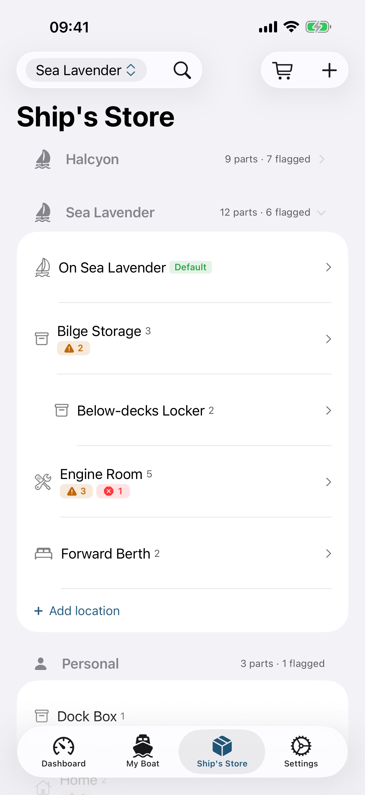
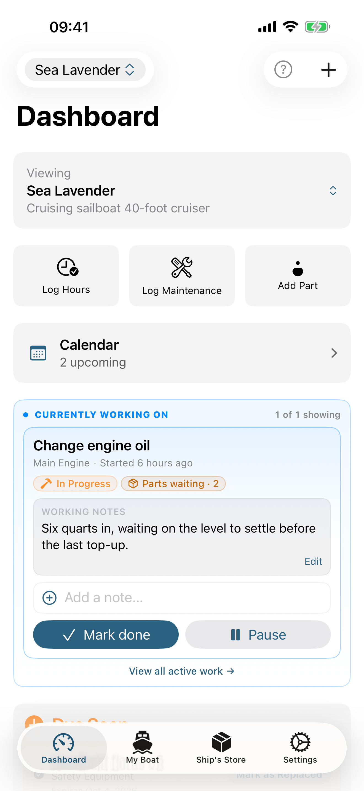
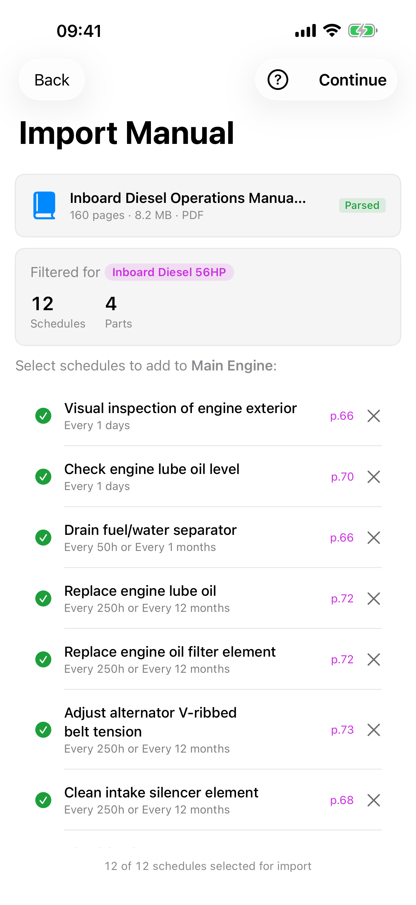
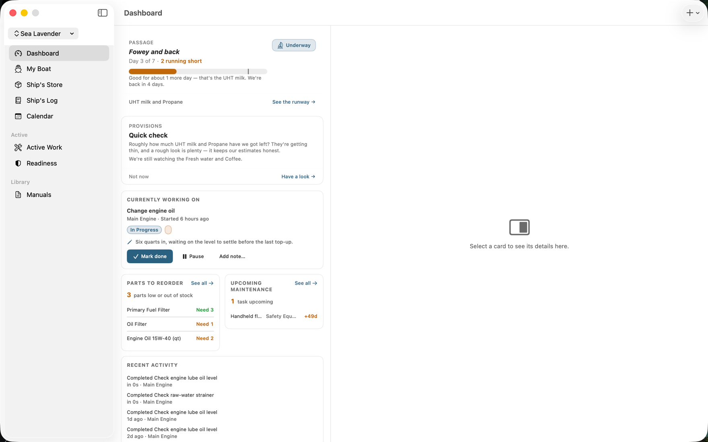

Boat maintenance,
on your terms.
Owning a boat is a labor of love. Maintenance Crew helps you keep up with the labor — scheduled services, spare parts, and the manuals that tell you when, what, and how — so you have more time on the water.



A calm, organized place for everything your boat needs.
Plan ahead. Stay ahead.
Set up oil changes, impeller swaps, zinc rotations, and any other recurring service. Quick-pick chips fill in common intervals. The dashboard surfaces what's overdue, what's in progress, and what's coming up — while everyday "daily basics" stay calm and out of the way.
- See it coming on a calendar. A month and week view shows what's due, with export to Apple Calendar or Google Calendar.
- Pull schedules from PDFs. Drop in an owner's manual and let AI extract the maintenance schedule and parts list.
- Log a whole day at once. Tick off a whole session of finished jobs in one pass, parts and hours included.
- Map your maintenance locations. Every completed job can carry a location and plots on a chart, with the busiest spots standing out.
Track every spare part.
Catalog parts by name, part number, and supplier. Ship's Store learns how fast you actually burn through each part and flags what to reorder before your next haul — fast-moving spares rise to the top of the list.
- Know where everything is. Organize spares by stow location and move them between locations as you use them.
- Scan a part from its packaging. On-device recognition fills in the manufacturer, name, and part number — no typing.
- Stock the galley. Track food, water, fuel, and supplies against a par level, or a simple Good, Low, or Out.
- Provision for a passage. Forecast what you'll need for a trip and build the shopping list for what's short.
Track safety gear.
PFDs, flares, fire extinguishers, EPIRBs, and batteries get their own schedules and expiry reminders — driven by the printed date or an inspection interval. Safety items are interleaved with maintenance by due date on the dashboard, never buried in a separate list.
- Never miss a renewal. Registration and insurance renewal dates surface in your due list and departure check.
- Know you're ready to leave the dock. Safety gear, provisions, and overdue service roll up into one departure-readiness score.
Local-first & private.
Your records live on your device. No Maintenance Crew account. No Maintenance Crew server. No analytics. Optional iCloud Sync keeps things current across your own Apple devices — and, only when you choose to, with the co-skippers you invite to a boat.
- Share a boat with your crew. Invite a co-skipper to collaborate — private and invite-only, never a public link.
- Add photos to anything. Attach photos to vessels, parts, and schedules — they sync right along with the record.
- Works offline. Your records and parsed manuals are always available, with no signal required.
At the helm or the chart table.
On iPhone, Maintenance Crew is a quick check between jobs. On iPad and Mac it opens up into a full three-column workspace — sidebar, list, and detail side by side — so you can plan a season, review a system, and read the manual without losing your place. The same records, synced across every device you own — and, when you share a boat, with your crew.

Maintenance Crew Annual
One annual subscription covers iPhone, iPad, and Mac, with Family Sharing and iCloud Sync. See current pricing on the App Store.